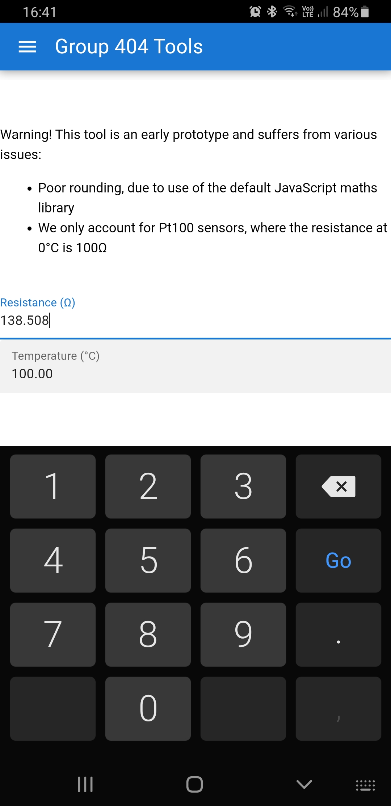

ASSESMENT TASK 3
Team Project
 |
 |
 |
 |
 |
|---|
| |
|
|
|
|
|---|
We have defined our preliminary aims clearly, and subdivided into smaller goals, prioritising more important tasks to focus on along the way. Overall, we have our main focus in that we will develop a mobile application which converts a numerical resistance input into a meaningful temperature in degrees Celsius.
The responsibility of taking this concept and turning it into a reality fell to our lead programmer and project lead. The project lead was responsible for articulating the technical aspects of formulas and outlining what the finished product would look like. The programmer was tasked with turning these articulated technical aspects into code that matched the project leads vision.
The first phase of the project was to simply translate the mathematical functions into JavaScript. Our lead programmer had faith that JavaScript would be the most suitable programming language, not only because of prior programming experience with personal projects, but because it was understood to provide the most support across the widest range of target devices, thus increasing the availability of our app.
It was this phase in the project where most of the work was done. There were numerous discussions spanning several weeks, as our lead programmer lacked confidence in handling the complex mathematics having viewed the formula, and our project lead not strictly understanding the limitations. It is to be said as well, we were not strictly handling the Callendar-Van Dusen formula in its base form as defined in the IEC60751 standard. We needed to find the inverse of this function. This was our first step.
Where:
R(T) is resistance at the reference temperature
R(0) is resistance at zero degrees Celsius
A is a defined constant according to IEC60751
B is a defined constant according to IEC60751
C is a defined constant according to IEC60751
T is the reference temperature
As we can see from the above equation, this calculation allows one to convert temperature to resistance. This is not our aim. We endeavour to convert resistance to temperature. Not the simplest of tasks for a group of first year university students…
From discussions with our lead programmer and project lead, it was determined we investigate using a high-powered mathematics engine to help us invert our formula. We came across WolframAlpha, a computational knowledge/answer engine. According to WolframAlpha, “it works by using its vast store of expert-level knowledge and algorithms to automatically answer questions, do analysis and generate reports”
 https://www.wolframalpha.com/tour/
https://www.wolframalpha.com/tour/
It was left to our project lead to investigate suitability and obtain the formula we needed. After all, our project lead was the only one with hands on experience in this field, and was the only one who would really know if the output of any test calculations on WolframAlpha was indeed giving us the right answer. This involved learning to write the formula as a question in which WolframAlpha could understand, and involved substituting the A, B and C constants into their required values to test the output.
Over a couple of days, our project lead managed to realize a way in which to invert the IEC60751 formula. The result was daunting to our lead programmer to say the least. Due to the complexity of the initial formula, inverting resulted in not just one, but four separate answers which had different conditions. It was then up to the project lead to isolate the single of four correct answers which resulted in the right condition. Further, the resulting correct inverted equation was enormously long.
The formula had finally been established. It was now up to our lead programmer to make heads or tails of it and convert it into a mathematical function in JavaScript. In order to do this, we felt it beneficial to create a simple spreadsheet to prove the concept. We took the plaintext output from WolframAlpha, loaded it as an equation in Microsoft Excel, changed the syntax where appropriate so that when we did the same thing in JavaScript, we had an already working formula that all of us could check and test against. Not only was this helpful for testing, but more than that, it proved our concept that we could take a mathematical formula and implement it into a text-based format.
Excel iteration of the formula
Based on our working spreadsheet, it was extremely straight forward to express our new formula as a JavaScript function. It became clear that the WolframAlpha and Excel syntax was very similar to the JavaScript maths library syntax. The only changes being, that spaces between numbers could not be treated as multipliers as is traditionally the case in normal maths language, and required us to add the multiplication operator. Additionally the square root function needed to be replaced with the JavaScript “math.sqrt” function.
https://github.com/S3913624/COSC2196Project/blob/main/src/iec60751.js
As is the case with any professional project, we encouraged regular and thorough testing. As it turned out this was extremely beneficial as we discovered early that there was a bug in our JavaScript function, which resulted in the temperature not being reported beyond a range value. Our lead programmer was briefly stumped, but was able to discuss the issue with the Web Developer / Programmer. It became apparent that a logical check had not been addressed which resulted in a portion of the mathematics not being implemented properly. The Web Developer / Programmer corrected the code, and the team finally had a working IEC60751 calculation that converted resistance to temperature.
Now that the team had a working calculation, it was a matter of creating the application around it. Based on input from both our Lead Programmer and Web Developer / Programmer, the team deemed Quasar the most suitable framework for development. On investigation, it appeared there was plenty of documentation to support us and it seemed to be a top choice for app developers across the globe.
Over the following weeks, our Lead Programmer created a basic application layout using Quasar. Although we considered delays due to the learning curve of a new framework, regrettably we did not accurately anticipate how long this would take. Specifically, the delays were due primarily to learning to use the command line interface in Quasar, learning how Quasar’s implementation of Vue worked, and learning HTML / JavaScript elements that were previously unfamiliar to the team.
Development continued however, and began to accelerate quickly as we became more familiar with the platform. After the preliminary version of the layout was developed, our Lead Programmer hastily deployed the project to GitHub to verify the layout worked when hosted via GitHub pages. There were no issues, and we were able to finally implement our new JavaScript function within the application.
Thankfully we were continuously testing, as it became apparent that there was yet another bug in the programming. We were only accurate to two decimal places. After investigation, it was discovered that this was frankly outside our control, as JavaScript rounds negative values counter-intuitively. It rounds in the positive direction, regardless of whether it’s mathematically supposed to or not. After discussion with our Project lead, it was determined that two decimal places was absolutely adequate for the vast majority of the applications this app would be considered helpful for. Although we were personally not satisfied, we would proceed with development and simply add a disclaimer that there are rounding faults. It would be something to consider and rectify in the event of further development.
Once it was proven that our Quasar application works as a single page app hosted via GitHub, our Lead Programmer explored building the app natively for other platforms, primarily Android. After all, this was the overall aim. As expected, there was substantial research required. Ultimately, we settled on several different frameworks in addition to Quasar. For desktop we used Electron, for mobile we used Capacitor, all of which were programmed to compliment each other, specifically adding support for electron in the applications layout for visual consistency across platforms.
Desktop version screenshot
Building and compiling our Quasar / Electron app for the desktop and single page targets was relatively straight forward. We did however encounter a delay which had the potential to prevent us from capturing footage of our app for the sake of our presentation. It became apparent that due to a lack of application signing, it was a requirement that the app was built through Android Studio in debug mode, instead of directly through Quasar. If it were not built in debug mode, the APK file would be invalid.
Thankfully our lead programmer was able to identify the issue and rectify in a timely manner. Once it was confirmed to work on not just one, but all of the teams Android devices, we had time to clean and put a bit more emphasis on some aesthetics. We were really proud of what we had accomplished thus far, and we needed to put our name on it. Our digital assets expert created a team logo that we could use as an app icon, and use throughout the app itself.
Team Logo
The logo was integrated into the app using Quasars Icon Genie tool. Afterwards, we considered place-holders for additional functions that we would have liked to develop had time permitted. This was to improve the presentation and indicate potential avenues for development for the media portion of assignment.
This concluded our work on the practical aspects of the project. We maintained documentation throughout and were able to compile our accomplishments into our final report efficiently and eloquently. We are incredibly proud of what we achieved in the amount of time, considering documentation requirements and assignment 5 presentation requirements. We feel what we have accomplished is by no means a small feat. We have a fully functioning mobile app that met our original goals. We have identified opportunities to expand further and improve, and we are excited to continue development outside our studies.
In the meantime, you are welcome to download and install the APK, available from the link below. Understandably some may be hesitant installing unverified applications, so screenshots have been provided.
|  |